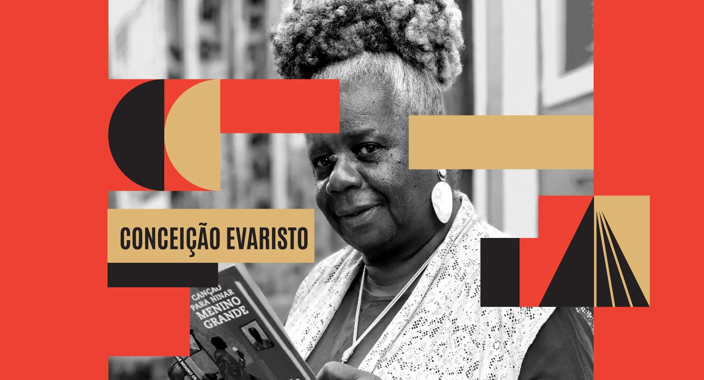
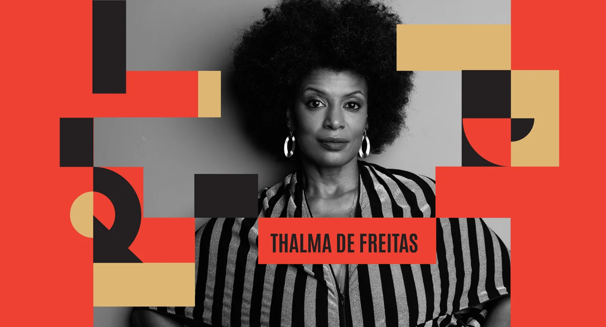
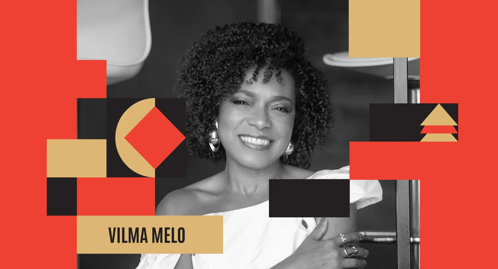
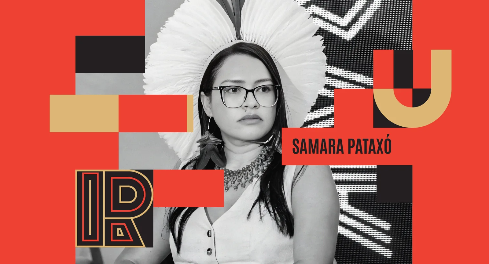
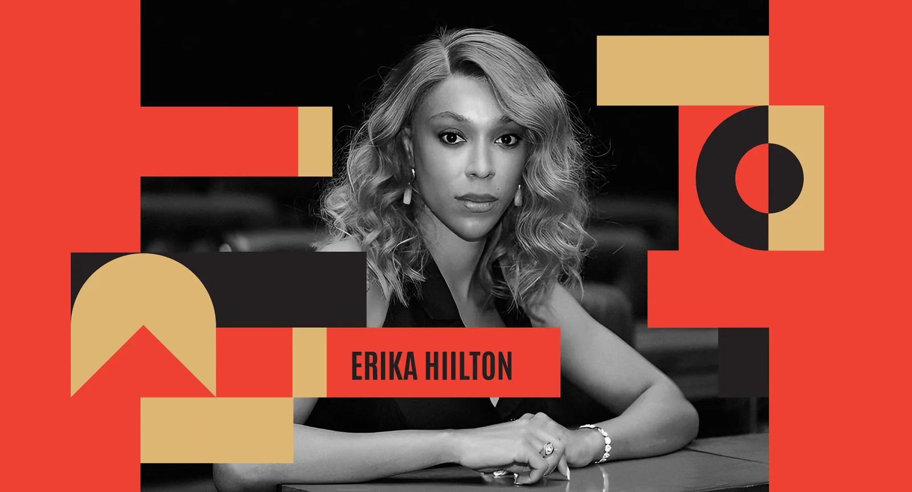
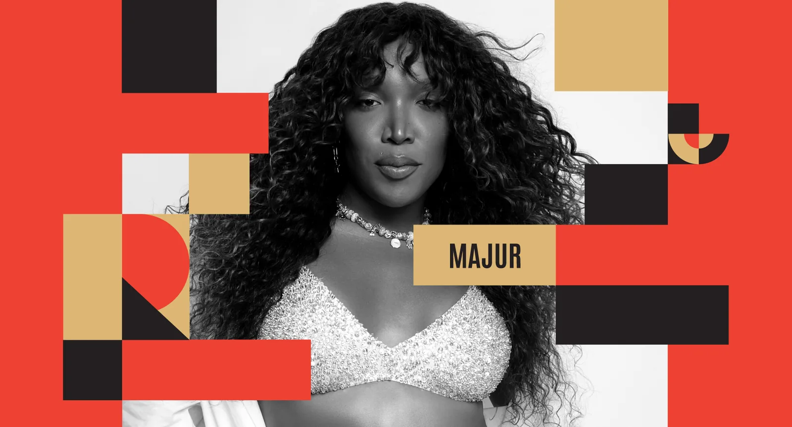
SOBRE O PROJETO
O Comunicação Antirracista nasceu da urgência de transformar o debate público e as práticas de comunicação no Brasil. Parte do princípio de que comunicar é mais que uma escolha ética — é um ato de justiça. O projeto foi criado para ser um espaço de pensamento, mobilização e ação, onde palavras viram pontes, silêncios se transformam em vozes e a ausência estrutural dá lugar à presença e à reparação.
A primeira edição, “Comunicação Antirracista: Consciência, Resistência, Ação”, aconteceu em 31 de maio de 2025, no Museu Nacional da República, em Brasília. Reuniu ativistas, especialistas e representantes de políticas públicas para refletir e propor caminhos de equidade racial. A programação contou com Cristiane Sobral, Midiã Noelle, Rodrigo França, Pâmela Carvalho, Deives Rezende Filho, Ana Paixão, Erisvan Guajajara, Ayla Tapajós, Ilka Teodoro e o secretário Tiago Santana, do Ministério da Igualdade Racial. O encerramento ficou por conta de Brisa Flow, reafirmando a arte como resistência.
Após o sucesso em Brasília, o projeto chega ao Rio de Janeiro, de 19 a 23 de novembro de 2025, durante o Mês da Consciência Negra. A segunda edição, com o tema “Vozes Femininas Negras e Indígenas em Diálogo pela Transformação”, acontece na Casa Museu Eva Klabin. A programação será dedicada à potência das mulheres negras e indígenas, ampliando o olhar sobreo racismo estrutural e propondo novas narrativas de futuro.
Inspirada no pensamento de Lélia Gonzalez e homenageando Conceição Evaristo, esta edição reafirma a palavra como instrumento de resistência e reparação. Reúne Clara Anastácia, Vilma Melo, Thalma de Freitas, Vera Lúcia Santana Araújo, Samara Pataxó, Eliane Potiguara, Érika Hilton e Mônica Cunha em painéis mediados por Daniele Salles e com registro textual de Pâmela Carvalho. Além dos debates, o evento promove ações educativas para estudantes da rede pública e celebra a cultura negra com o DJ set de Marta Supernova e o show de encerramento de Majur — compondo uma jornada que reafirma a comunicação como prática de justiça e transformação.
BRASÍLIA
Consciência,
Resistência e
Ação
RIO DE JANEIRO
Vozes Femininas Negras
e Indígenas em Diálogo
Pela Transformação
PROGRAMAÇÃO
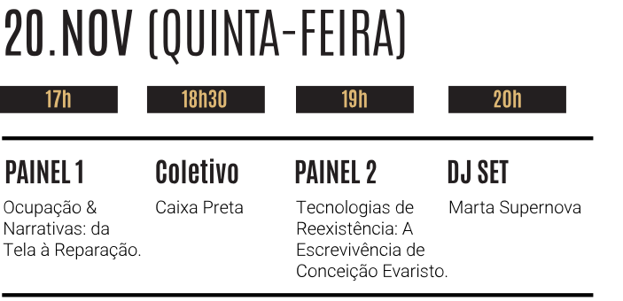
20.NOV - 17H
PAINEL 1
OCUPAÇÃO & NARRATIVAS:
DA TELA À REPARAÇÃO
Com Clara Anastácia, Vilma Melo e Thalma de Freitas | Mediação: Daniele Salles
20.NOV - 19H15
PAINEL 2
TECNOLOGIAS DE REEXISTÊNCIA:
A ESCREVIVÊNCIA
DE CONCEIÇÃO EVARISTO
Com Conceição Evaristo | Mediação: Daniele Salles
Neste painel, Conceição Evaristo trata da palavra como instrumento de cuidado, denúncia e reparação simbólica e material, articulando raça, gênero, classe e território; e afirma a literatura como prática pública de democracia.
20.NOV - 20h
DJ SET
Marta Supernova
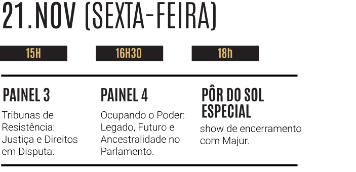
21.NOV - 15H
PAINEL 3
Tribunas de Resistência:
Justiça e Direitos em Disputa
Com Vera Lúcia Santana Araújo e Samara Pataxó | Mediação: Daniele Salles
21.NOV - 16H30
PAINEL 4
OCUPANDO O PODER: LEGADO,
FUTURO E ANCESTRALIDADE
NO PARLAMENTO
Painelistas: Eliane Potiguara, Érika Hilton e Mônica Cunha | Mediação: Daniele Salles
Juntas, discutem táticas, alianças e cuidados para avançar em um projeto de país antirracista e plurinacional, atuando dentro e fora do Estado.
21.NOV - 18h
PÔR DO SOL ESPECIAL
MAJUR
PARTICIPANTES
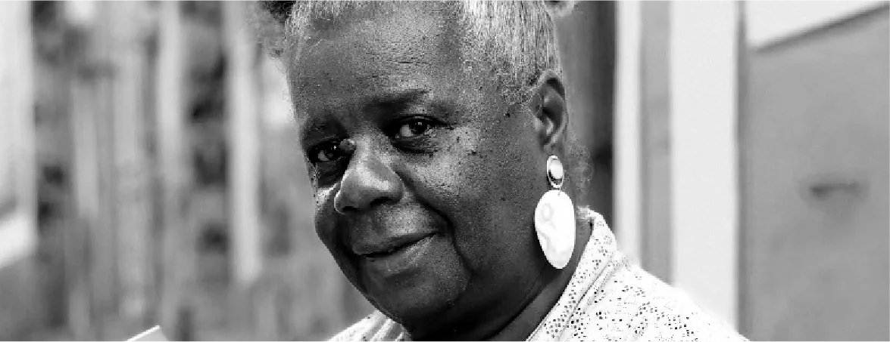
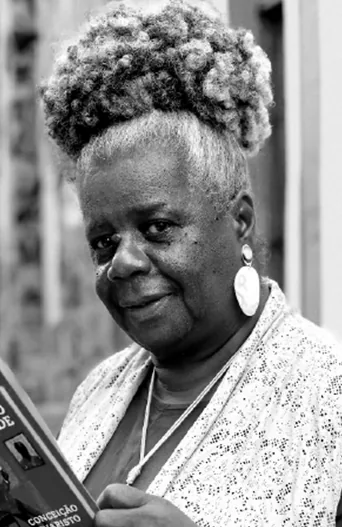
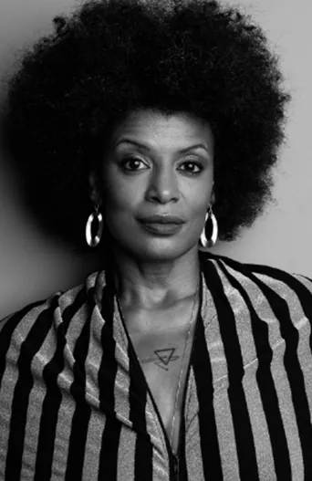
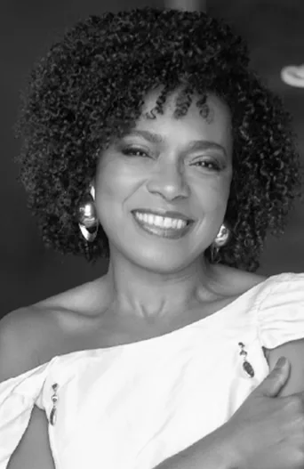
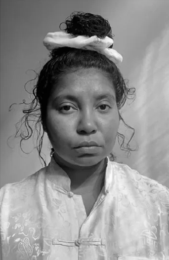
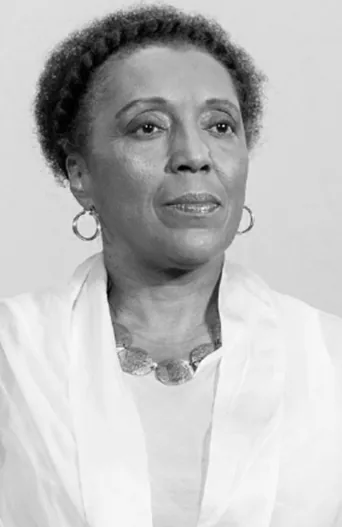
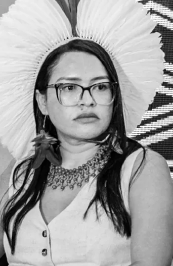
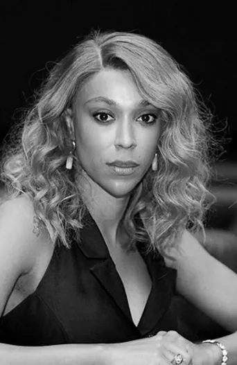
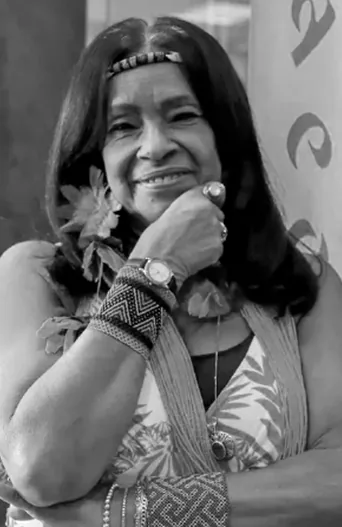
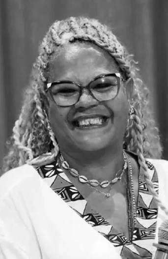
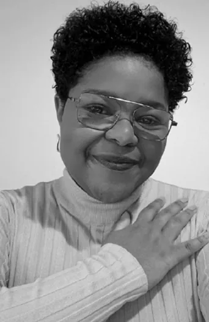
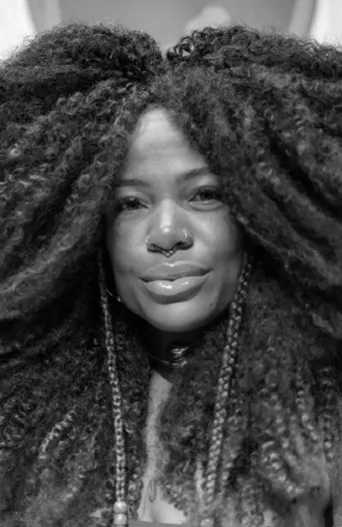
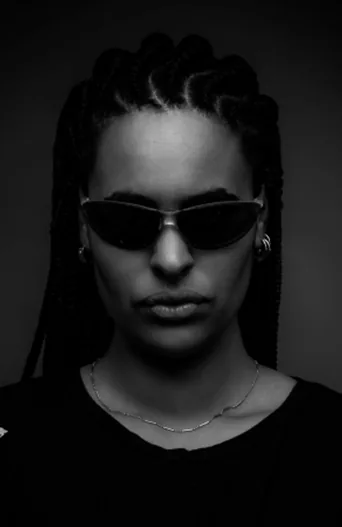
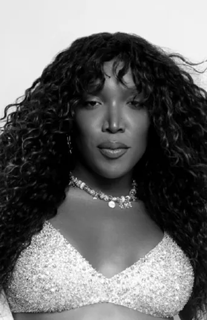
ACESSIBILIDADE
• O evento contará com o recurso de interpretação em Libras.
• O local tem acesso apropriado e assentos para pessoas com deficiência, obesas e/ou com mobilidade reduzida.


Acreditamos no poder da comunicação como ferramenta de transformação social. Apoiar este projeto é reafirmar nosso compromisso com a equidade racial e com a construção de um país mais justo.
